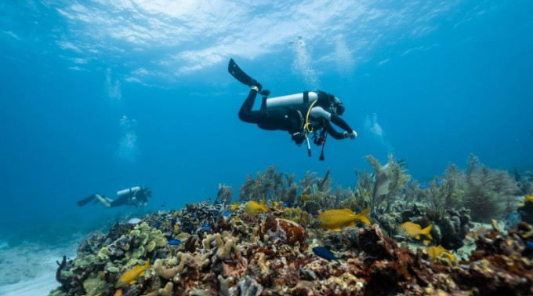
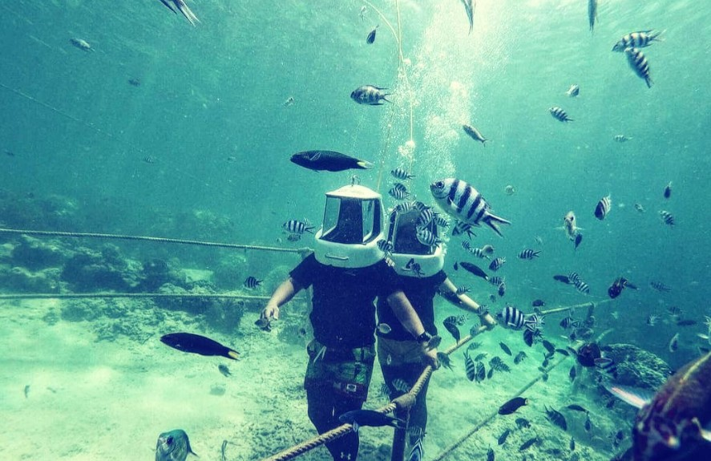
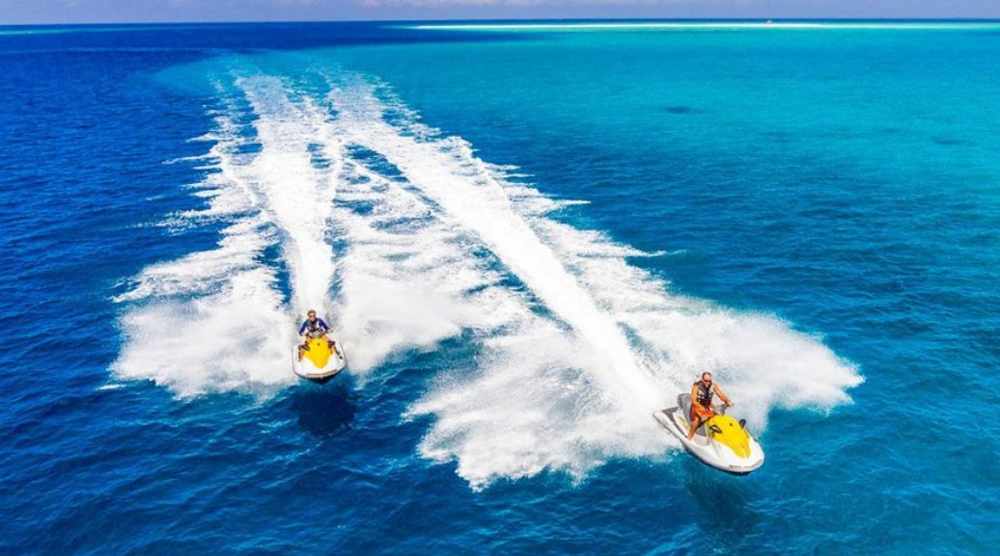

The Andaman Islands are famous for crystal clear beaches, scuba diving, coral reefs, and thrilling water sports. It is one of India's best destinations for adventure lovers.

Explore colorful coral reefs and marine life at Havelock Island.

Walk under the sea and experience marine beauty up close.

Enjoy thrilling speed rides across the blue waters.
Best time to visit: October to May.
Carry light cotton clothes and sunscreen.